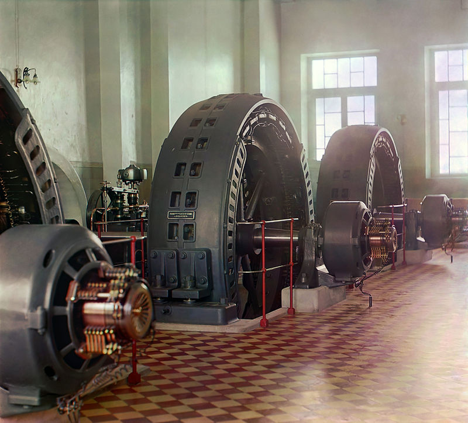

Előadás tematikája:
-
Bevezetés a villamos gépek világába. A
villamos gépek csoportosítása, helyük és
szerepük a villamosenergia-rendszerben.
-
Transzformátorok felépítése és működési
elvük. Egyfázisú transzformátorok
helyettesítő kapcsolása.
-
Háromfázisú transzformátorok, kapcsolási
típusai, üzemállapotai.
-
Aszinkron gépek felépítése és működése.
Mechanikai jelleggörbéje.
-
Aszinkron gépek típusai, speciális gépek és
alkalmazhatóságuk. Egyfázisú aszinkron
gépek.
-
Szinkron gépek felépítése, működése,
mechanikai jelleggörbéje, szinkronozás.
-
Egyenáramú gépek felépítése és működése.
-
Egyenáramú gépek gerjesztési módjai és
üzemállapotai. Mechanikai jelleggörbék.
-
Kefenélküli motorok működése.
-
Motorkiválasztás szempontjai.
-
Transzformátor mérési gyakorlat.
-
Motorok mérési gyakorlat.
-
Motorok mérési gyakorlat.
-
Üzemlátogatás
